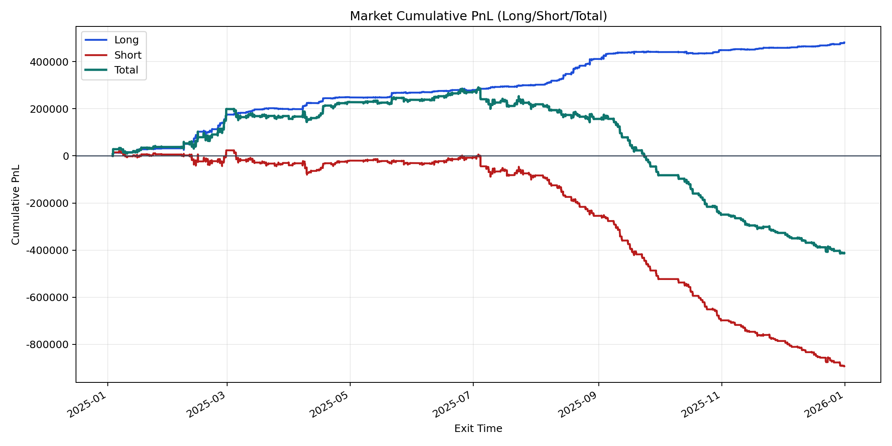
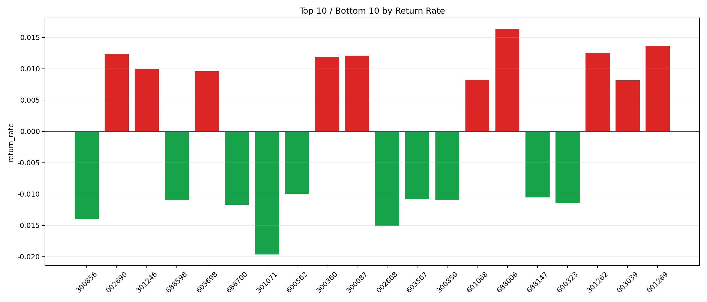

| repo_root | /home/haoranyou/data/output/alpha0.4_1w_5s_3ticks_index_filter/index_weights_1000 |
|---|---|
| period_months | 12 |
| period_label | 2025-01-03_to_2025-12-31 |
| start_time | 2025-01-03 09:50:27 |
| end_time | 2025-12-31 14:45:02 |
| n_trades | 243625 |
| n_symbols | 688 |
| total_pnl | -411448.31355000014 |
| long_total_pnl | 481620.8812499998 |
| short_total_pnl | -893069.1947999999 |
| total_entry_notional | 2277608026.0 |
| long_entry_notional | 398187087.0 |
| short_entry_notional | 1879420939.0 |
| total_return_rate | -0.00018064930789368414 |
| long_return_rate | 0.0012095341536025245 |
| short_return_rate | -0.0004751831674681581 |
| top_symbols_by_return | ["688006", "001269", "301262", "002690", "300087", "300360", "301246", "603698", "601068", "003039"] |
| bottom_symbols_by_return | ["301071", "002668", "300856", "688700", "600323", "688598", "300850", "603567", "688147", "600562"] |

